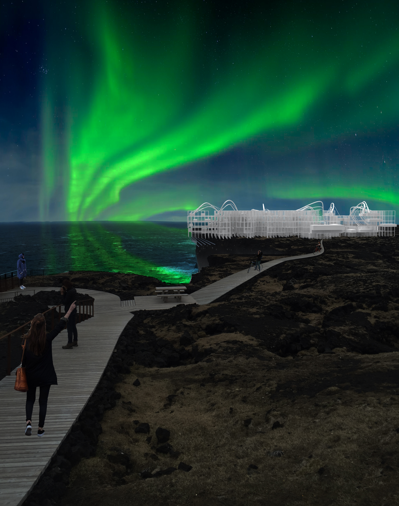
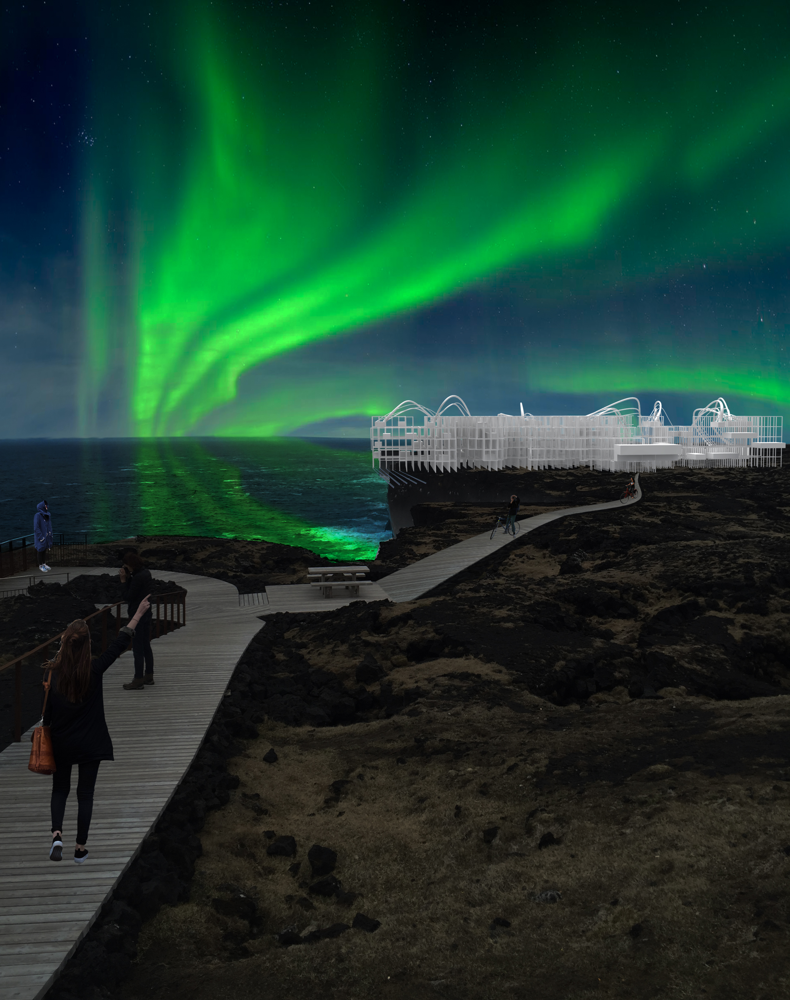

Introduction to Photoshop
This piece is inspired by a recent trip to Iceland. I took this photo on the snæfellsnes peninsula. I was drawn to this area because of the power and strength of the water against the cliff side. The raggedness of the cliff can be attributed to the constant pounding of the ocean. I decided to add northern lights to the scene because I never got a chance to see them while I was there.